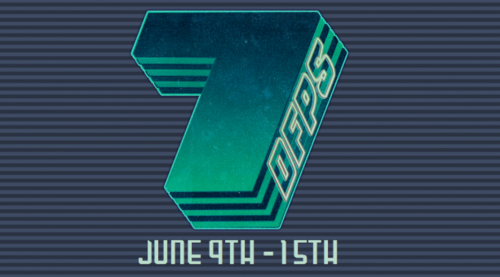

Примерно в конце апреля один из разработчиков из (моего любимого) Vlambeer заявил об этой идее в Твиттере. Смысл, думаю, понятен из названия, но это будет не одна игра. В период с 9 по 15 июня каждая участвующая инди-компания (а их не мало) делает свой FPS, но, чаю, не стоит ждать стандартности, на то оно и инди. Вот некоторые идеи, которые предлагают в твиттере под хэштегом #7dfps:
«You’re Cyclops from X-Men and you’ve lost your sunglasses. Find some more without destroying everything»
«An FPS where you are your own enemy, you shoot on yourself and try to avoid the bullets, weird right?»
«time travel multplayer where ur actions are logged, when one dies level restarts, your clone spawns too, repeats ur prev actions…»
Официальный сайт тут , и ещё посмотрите очень крутое лейтмотив-видео:[[MORE]]